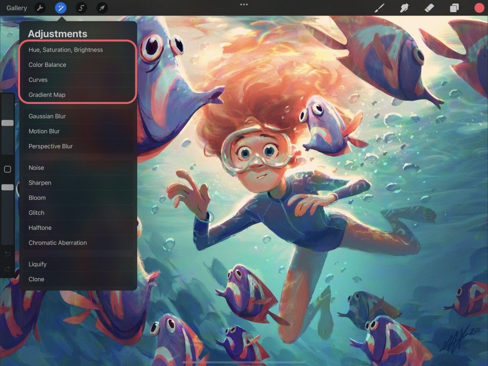
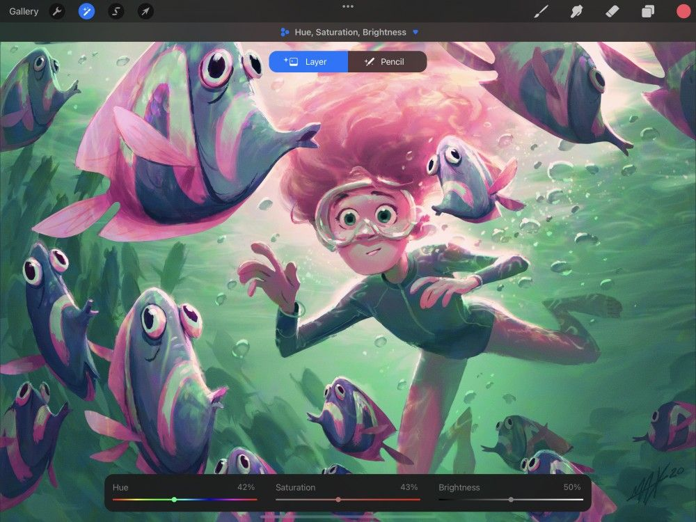
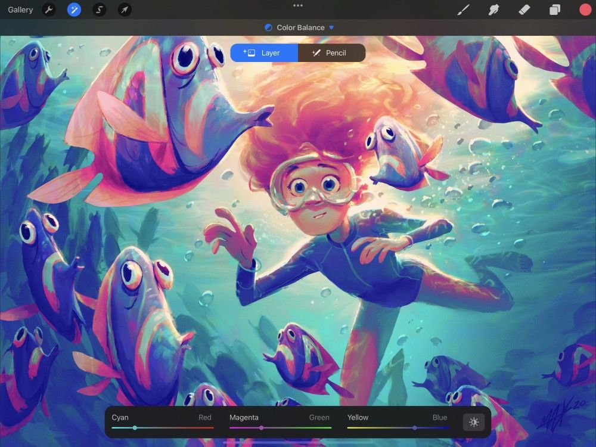
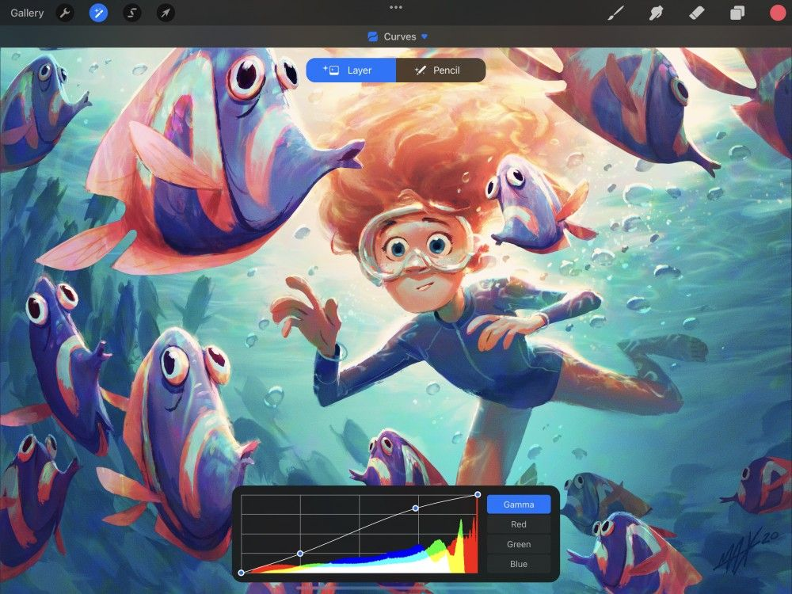
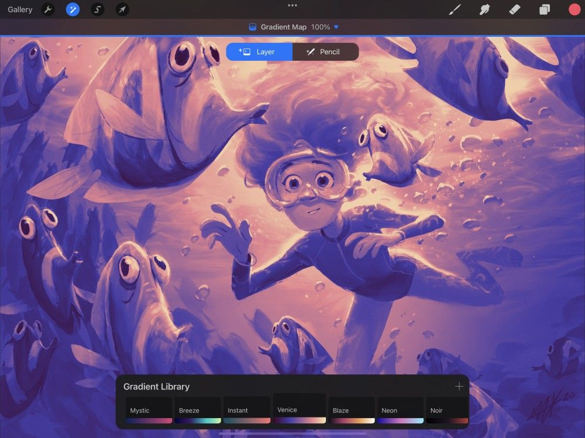
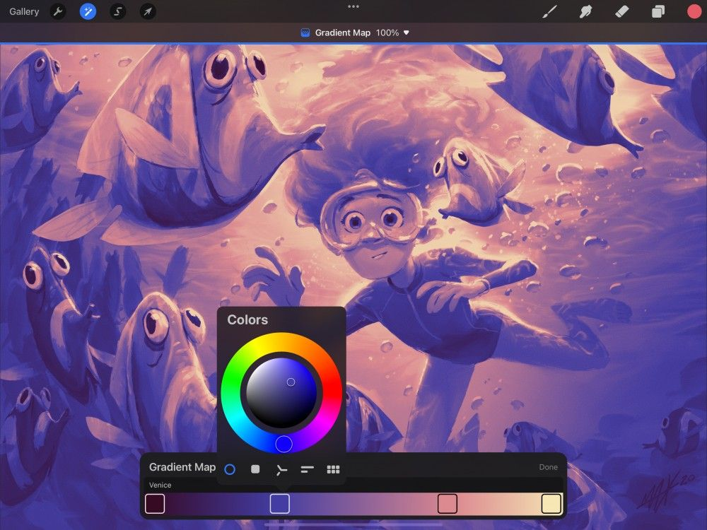

📖 Đã dịch sang tiếng Việt. Thuật ngữ chuyên môn giữ tiếng Anh — rê chuột để xem nghĩa (tooltip).
Color Adjustments
Đưa tác phẩm của bạn lên tầm cao mới với các công cụ điều chỉnh màu theo tiêu chuẩn ngành. Điều chỉnh Hue, Saturation và Brightness hoặc tinh chỉnh chuyên nghiệp Color Balance. Thử nghiệm với Curves trên một biểu đồ histogram hữu ích, và Recolor các phần ảnh một cách dễ dàng.

Hue, Saturation, Brightness (Sắc độ, Độ bão hòa, Độ sáng)
Tinh chỉnh giá trị màu, sức sống và độ sáng của bất kỳ lớp nào bằng các thanh trượt đơn giản.

HSB là cách đơn giản nhất để thực hiện điều chỉnh màu nhanh chóng.
Chạm Adjustments > Hue, Saturation, Brightness để vào giao diện HSB.
Giao diện
Ba thanh trượt cho bạn quyền kiểm soát chất lượng chung của màu sắc trong ảnh.
- Hue (sắc độ) quyết định tông màu tổng thể được dùng trong ảnh. Thanh trượt này là một quang phổ của mọi sắc thái màu sẵn có.
- Saturation (độ bão hòa) quyết định cường độ màu. Kéo thanh trượt sang trái để giảm bão hòa màu xuống hướng xám, và sang phải để làm màu sống động nhất có thể.
- Brightness (độ sáng) đặt mức sáng hoặc tối tổng thể của ảnh.
Commit Changes (Lưu thay đổi)
Lưu toàn bộ thay đổi bằng một cú chạm.
Để lưu thay đổi và thoát khỏi Adjustments, hãy chạm lại vào biểu tượng Adjustments.
Để lưu thay đổi và ở lại trong Hue, Saturation & Brightness, hãy chạm khung vẽ để mở Adjustment Actions rồi chạm Apply.
Color Balance (Cân bằng màu)
Hiệu chỉnh hoặc cách điệu sơ đồ màu của bạn bằng cách thay đổi sự cân bằng giữa các sắc độ tạo nên tác phẩm.

Màu sắc được hình thành trên màn hình bao gồm sự pha trộn của ba màu cơ bản: đỏ, lục và lam. Việc kết hợp ba giá trị này theo các cách khác nhau cho phép tạo ra hơn mười sáu triệu sắc thái màu duy nhất.
Việc thay đổi sự pha trộn của RGB bằng Color Balance cho bạn khả năng hiệu chỉnh màu nhanh trên ảnh. Hoặc bạn đẩy các màu RGB đến giới hạn để tạo ra sự cách điệu.
Chạm Adjustments → Color Balance để vào giao diện Color Balance.
Giao diện
Dùng các thanh trượt RGB và các nút Highlights / Midtones / Shadows để tinh chỉnh màu của lớp đang hoạt động.
Color Balance tách Đỏ, Lục và Lam thành các thanh trượt riêng. Mỗi màu này được cân bằng với màu đối lập của nó (Lục lam, Hồng sẫm và Vàng).
Việc này cũng tách Highlights, Midtones và Shadows của ảnh thành ba phần. Nhờ đó bạn có thể kiểm soát tinh tế hơn phần nào của ảnh bị ảnh hưởng bởi các thay đổi màu.
Sliders
Trượt sang phải để đẩy tông của lớp về phía Đỏ, Lục hoặc Lam. Trượt sang trái để dịch về phía Lục lam, Hồng sẫm hoặc Vàng.
Buttons
Chạm Shadows, Midtones hoặc Highlights để chọn phần nào của ảnh sẽ bị ảnh hưởng bởi các thay đổi màu. Việc này sẽ tác động lên phần tối nhất, các tông giữa, hoặc vùng sáng nhất của ảnh.
Pro Tip
Adjusting the Midtones is the best way to achieve even color adjustment. Midtones are selected by default when you open Color Balance.
Commit Changes (Lưu thay đổi)
Lưu toàn bộ thay đổi bằng một cú chạm.
Để lưu thay đổi và thoát khỏi Adjustments, hãy chạm lại vào biểu tượng Adjustments.
Để lưu thay đổi và ở lại trong Color Balance, hãy chạm khung vẽ để mở Adjustment Actions rồi chạm Apply.
Curves
Thay đổi cân bằng màu và tông màu của lớp bằng một thao tác trơn tru nhờ Curves mạnh mẽ.

Curves cung cấp cách điều chỉnh màu và độ tương phản tiên tiến nhất trong ảnh tính đến nay.
Chạm Adjustments → Curves để vào giao diện Curves.
Overview (Tổng quan)
Công cụ này thể hiện các giá trị tông màu của lớp dưới dạng một đường thẳng trên đồ thị. Bạn có thể uốn đường này thành các đường cong ảnh hưởng đến màu của ảnh theo nhiều cách khác nhau.
Phần có màu của đồ thị này được gọi là histogram. Đó là bản đồ cho biết vị trí mỗi màu xuất hiện trong ảnh và lượng của nó. Nó có thể giúp bạn hình dung cách các thay đổi sẽ ảnh hưởng đến cân bằng màu tổng thể của lớp.
Giao diện
Nodes
Kéo một nút lên trên để ảnh hưởng đến độ sáng của lớp. Kéo một nút xuống dưới để ảnh hưởng đến độ tối. Kéo một nút sang trái hoặc phải để ảnh hưởng đến độ tương phản.
Bạn có thể thêm tối đa 11 nút. Để xóa một nút, hãy chạm vào nó rồi chạm Delete.
Cách tốt nhất để hiểu cách hoạt động của curves là thử nghiệm với chúng và quan sát lớp của bạn thay đổi ra sao.
Histogram
Histogram là biểu đồ thể hiện sự cân bằng của màu đỏ, lục và lam trong ảnh. Các màu khác ngoài đỏ, lục, lam cho thấy các kênh này đang chồng lên nhau. Ví dụ, màu tím nghĩa là cả lam và đỏ đều có mặt ở phần đó của ảnh. Trong khi màu trắng nghĩa là cả ba kênh đều đang hoạt động.
Gamma and Channels (Gamma và Kênh)
Theo mặc định, khi bạn bắt đầu dùng curves, bạn đang thay đổi gamma tổng thể, tức là bạn đang điều chỉnh cả ba kênh màu - đỏ, lục và lam - cùng lúc.
Chạm Red, Green hoặc Blue để bắt đầu điều chỉnh riêng một kênh màu. Việc điều chỉnh curves trên từng kênh màu riêng biệt cho phép kiểm soát gần như không giới hạn đối với việc hiệu chỉnh và hiệu ứng màu.
Commit Changes (Lưu thay đổi)
Lưu toàn bộ thay đổi bằng một cú chạm.
Để lưu thay đổi và thoát khỏi Adjustments, hãy chạm lại vào biểu tượng Adjustments.
Để lưu thay đổi và ở lại trong Curves, hãy chạm khung vẽ để mở Adjustment Actions rồi chạm Apply.
Gradient Map (Ánh xạ gradient)
Áp dụng một gradient đầy màu sắc trên các ảnh bằng Gradient Map.
Gradient mapping phân tích vùng sáng, tông giữa và vùng tối của ảnh. Sau đó nó thay thế (ánh xạ) các vùng này bằng các màu có trong một gradient mới.
Chạm Adjustments → Gradient Map để vào giao diện Gradient Map.
Giao diện
Dùng các Gradient Palette có sẵn để gán một Gradient Map cho ảnh. Hoặc tự xây dựng Gradient Palette tùy chỉnh để tạo ra các ảnh ấn tượng.

Gradient Library (Thư viện gradient)
Gradient Library chứa tám Gradient Palette có sẵn có thể gán cho ảnh — Mystic, Breeze, Instant, Venice, Blaze, Neon, Noir và Mocha. Chạm vào một Gradient Palette để gán nó cho ảnh. Hoặc trượt các Gradient Palette sang trái hoặc phải để xem các Gradient Map có sẵn lần lượt chạy qua ảnh.
Chạm và Giữ một Gradient Palette có sẵn để Delete hoặc Duplicate nó. Chạm, Giữ và Kéo một Gradient Palette có sẵn để sắp xếp lại thứ tự trong Gradient Library. Để khôi phục các gradient mặc định của Gradient Library, hãy Chạm và Giữ biểu tượng + ở trên cùng bảng Gradient Library. Sau đó chạm nút Restore defaults.
Create a custom Gradient (Tạo gradient tùy chỉnh)
Để tạo một bảng màu gradient tùy chỉnh, hãy chạm vào + ở góc trên bên phải của Gradient Library, hoặc chạm vào một Gradient đã chọn để chỉnh sửa.

Gradient Map (Ánh xạ gradient)
Khi tạo hoặc chỉnh sửa Gradient Library, giao diện sẽ chuyển sang giao diện Gradient Map. Tại đây bạn sẽ thấy một gradient có ít nhất hai điểm màu. Phần bên trái của Gradient Map ảnh hưởng đến vùng tối và tông tối hơn của ảnh. Phần bên phải sẽ ảnh hưởng đến vùng sáng và tông sáng hơn của ảnh.
- Chạm vào một Color Point để mở bộ chọn màu và đổi màu của điểm đó.
- Để thêm một Color Point vào Gradient Map, hãy chạm vào bất kỳ vị trí nào dọc theo gradient nơi chưa có mẫu màu. Một Gradient Map phải có ít nhất hai Color Point khác nhau ở hai đầu gradient. Tuy nhiên, bạn có thể thêm tới 10 Color Point dọc theo gradient, tổng cộng 12 màu.
- Chạm và Giữ một Color Point để xóa nó khỏi Gradient Map.
Tap a Gradient Map's Title to name or rename it. Tap Done when you are ready to save a Gradient Map to your Gradient Library.
Commit Changes (Lưu thay đổi)
Lưu toàn bộ thay đổi bằng một cú chạm.
Để lưu thay đổi và thoát khỏi Adjustments, hãy chạm lại vào biểu tượng Adjustments.
Để lưu thay đổi và ở lại trong Gradient Map, hãy chạm khung vẽ để mở Adjustment Actions rồi chạm Apply.
Still have questions?
If you didn't find what you're looking for, explore our video resources on YouTube or contact us directly. We’re always happy to help.